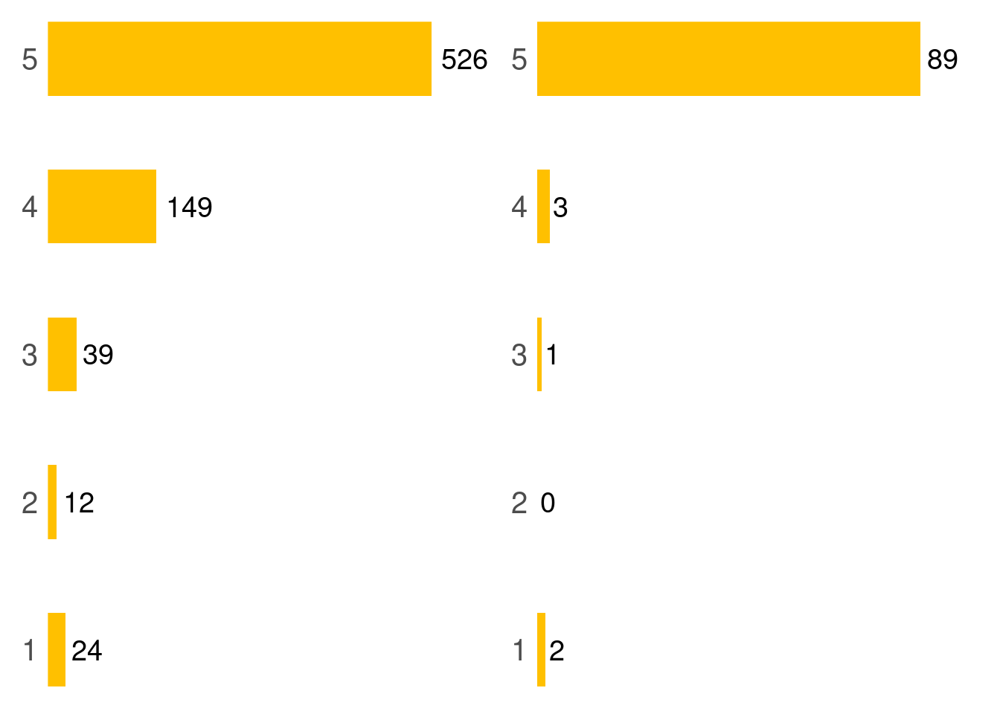

TP1: The Multiarmed Bandit
Introducción
La vida nos enfrenta constantemente a decisiones que nos obligan a equilibrar entre la seguridad de lo familiar y la promesa de lo desconocido, un dilema conocido como “explore vs. exploit”. Esta dicotomía, se manifiesta en una multitud de escenarios cotidianos. Por ejemplo, consideremos la elección de una cafetería para una merienda. ¿Optamos por un lugar al que hemos ido muchas veces, conocido por su calidad constante (‘exploit’), o probamos uno de los nuevos locales que abrieron en Rosario con el furor del café de especialidad que podría ofrecer una experiencia culinaria increíble o decepcionante (‘explore’)? Esta elección representa una encrucijada entre lo seguro y lo novedoso, entre el confort de lo familiar y la emoción de la novedad.
Este dilema también se extiende a decisiones más significativas en nuestras vidas, como la elección de una carrera, donde ‘exploit’ implicaría seguir en un campo donde ya tenemos habilidades y experiencia, mientras que ‘explore’ nos llevaría a aventurarnos en un nuevo dominio, potencialmente más gratificante pero también más arriesgado. Esta tensión entre explorar y explotar no es solo una curiosidad teórica; es un principio fundamental que guía nuestras decisiones diarias. Navegar entre estas dos opciones requiere una comprensión profunda de nuestras metas, recursos y el entorno en el que operamos, y es una habilidad esencial para la adaptación y el éxito en un mundo en constante cambio.
Estos párrafos de coaching emocional sirven como la introducción a este trabajo práctico, donde estudiaremos el problema del multi-armed bandit, que pone énfasis en el dilema “explore vs. exploit”. La traducción de multi-armed bandit es bandido multibrazo por lo que, por motivos obvios, nos quedaremos con la expresión en inglés.
El multi-armed bandit nos enfrenta a tres máquinas tragamonedas, tragaperras (si es por usar traducciones poco felices) o simplemente maquinitas (como les decimos en Rosario)…
La primera cafetería de especialidad que causó furor en Rosario fue Arto (Tucumán 1932), abierta en 2018. Con el correr de los años, el ecosistema cafetero de la ciudad fue agregando locales que subieron el umbral de la calidad de café que se consume. En 2022, entre otras, abrió Orlan (Dorrego 1670).
A enero de 2023, en Google Maps, Arto tiene una puntuación de 4.5⭐ (en 750 reviews) y Orlan, una puntuación de 4.9⭐ (en 95 reviews). Basándonos exclusivamente en las reviews de Google Maps, ¿podemos decir que Orlan es una opción mejor que Arto? ¿Podrá la estadística bayesiana darnos una respuesta?

En este trabajo se evaluarán dos modelos para comparar ambas cafeterías. El supuesto inicial del análisis es que las cafeterías tienen una puntuación verdadera basada en su calidad y medida en ⭐ sobre un máximo de cinco. Las opiniones de los usuarios, que consideraremos honestas, constituyen observaciones ruidosas de la puntuación verdadera. Vale la pena recordar que en Google Maps un negocio solo puede recibir un número entero de ⭐.
Modelo beta-binomial
En primera instancia, se modelizarán las reviews como una sucesión de lanzamientos de una moneda sesgada. La moneda tiene un 👍🏼 de un lado y un 👎🏼 del otro. La probabilidad de obtener 👍🏼 es \(\sigma\), que está relacionada con la calidad del bar. Luego de tomarse un cafecito, el cliente arroja la moneda al aire cuatro veces y puntúa a la cafetería según el número de 👍🏼 que obtuvo.
Según esta descripción, cada review es un proceso binomial con cuatro intentos y probabilidad de acierto \(\sigma\).
- Explique la relación entre la cantidad de 👍🏼 obtenidas al arrojar la moneda y la cantidad puntuación en ⭐ del bar.
- Describa la relación entre \(\sigma\) y la puntuación en ⭐ del bar.
- Construya una función que, dada una puntuación real de 1⭐ a 5⭐, simule el proceso de calificación de un usuario.
- Construya una función que, apoyándose en la apartado anterior, simule las reviews de \(U\) personas.
- Simule 1000 veces el proceso de 15 clientes que evalúan una cafetería de 4.1⭐ y el proceso de 100 clientes que evalúan la misma cafetería. ¿Qué se observa?
Utilizaremos este modelo para realizar inferencias sobre las puntuaciones de Arto y Orlan.
- Elija una distribución a priori para \(\sigma\) utilizando una distribución beta. ¿Qué implicancias tiene para la puntuación en ⭐ la distribución a priori elegida? Considere las implicancias para ambas cantidades de reviews.
- Con los datos de la introducción, obtenga la distribución a posteriori de \(\sigma\) para cada cafetería.
- ¿Cuál es la probabilidad de que Orlan sea mejor que Arto?
- ¿Cómo cambiaría el resultado si cada cafetería tuviera diez veces menos reviews?
Modelo Dirichlet-multinomial
Trabajaremos a continuación con otro modelo, también de distribuciones conjugadas. Para ello es necesario presentar dos distribuciones de probabilidad: la distribución de Dirichlet y la distribución multinomial.
Descubriendo la distribución de Dirichlet
La distribución Dirichlet es en realidad una familia de distribuciones. Se trata de una familia de distribuciones de probabilidad continuas y multivariadas. La distribución de Dirichlet en \(K \geq 2\) es la distribución de probabilidad del vector aleatorio \(X=[X_1, X_2 \dots, X_K]\) dimensiones tiene como parámetro al vector \(\mathbf{\alpha} = [\alpha_1, \alpha_2, \dots,\alpha_K]\).
\[ f(x_1,x_2,\dots,x_k \mid \alpha_1, \alpha_2,\dots,\alpha_K) = \frac{1}{B(\pmb{\alpha})} \prod_{i=1}^K x_i^{\alpha_i-1} \]
donde los \(\alpha_i \in \mathbb{R}^+\) y \(B(\pmb{\alpha})\) es la constante que hace que la integral sea unitaria.
El soporte de la distribución Dirichlet es tal que \(\sum_{i=1}^{K} x_i = 1\) y \(x_i \in [0,1]\). Es decir, los \(x_i\) suman 1. Si consideramos, por ejemplo, \(K=3\), el vector \([x_1, x_2, x_3]\) pertenece al triángulo en \(\mathbb{R}^3\) que tiene por vértices a los puntos \((1,0,0)\), \((0,1,0)\) y \((0,0,1)\). Así, si \(x_1=1\) entonces \(x_2=x_3=0\).
Más simple aún, cuando \(K=2\), el vector \([x_1,x_2]\) pertenece al segmento en \(\mathbb{R}^2\) que tiene por extremos a los puntos \((1,0)\) y \((0,1)\).
Notar que esta característica hace que los \(x_1, x_2, \dots, x_K\) puedan representar las probabilidades de un experimento con \(K\) resultados posibles.
A título informativo, el soporte de la distribución Dirichlet en \(K\) dimensiones es lo que se conoce como simplex (estándar) de \(K-1\) dimensiones. El \(3\)-simplex es un triángulo y el \(2\)-simplex es un segmento. En general, un \(K-1\)-simplex es la envolvente convexa de \(K\) vértices y, a su vez, es la colección de todas las combinaciones convexas de puntos en el conjunto (Teorema de Carathéodory).
Los párrafos anteriores, delirantemente matemáticos, muestran una virtud particular de la distribución Dirichlet de \(K=3\) dimensiones. Esta distribución, a pesar de ser de una variable aleatoria en \(\mathbb{R}^3\), puede representarse perfectamente de manera gráfica en dos dimensiones (aunque utilizando un sistema de coordenadas peculiar: las coordenadas baricéntricas), como si se tratara de una distribución bivariada.

- Mostrar que, cuando \(K=2\), la distribución de Dirichlet es la distribución beta de parámetros \(a=\alpha_1\) y \(b=\alpha_2\)
Relación entre la distribución Dirichlet y la multinomial
Cuando un experimento puede tener dos resultados posibles, uno de ellos tiene probabilidad \(p\) y el otro probabilidad \(1-p\). Si coleccionamos \(N\) realizaciones independientes del experimento, el número de éxitos es una variable aleatoria con distribución binomial. Estudiamos que era natural utilizar la distribución beta como distribución a priori para \(p\), dado que la distribución a posteriori también era beta.
Análogamente, cuando un experimento puede tener tres resultados posibles, el primero tiene probabilidad \(p_1\), el segundo tiene probabilidad \(p_2\) y el tercero, probabilidad \(p_3 = p_1 - p_2\). Necesariamente debe ser \(p_1 + p_2 + p_3 = 1\). Si coleccionamos \(N\) realizaciones independientes del experimento, el número de ocurrencias de cada resultado posible es un vector aleatorio con distribución multinomial. Por lo visto hasta aquí, todo parece indicar que, si queremos realizar inferencias sobre \(p_1\), \(p_2\) y \(p_3\), sería natural utilizar la distribución Dirichlet de tres dimensiones como distribución a priori para las probabilidades…
En efecto, cuando la distribución a priori es Dirichlet y la verosimilitud es multinomial, la distribución a posteriori también es Dirichlet.
Sabemos que para una verosimilitud binomial, si la distribución a priori de la probabilidad de éxito \(p\) es beta de parámetros \(a\) y \(b\) y se observan \(s\) éxitos en \(N\) intentos independientes, la distribución a posteriori es beta de parámetros \(a' = a + s\) y \(b' = b + (N - s)\).
Hallar, por analogía con el caso anterior, los parámetros de la distribución a posteriori que se obtiene si la verosimilitud es multinomial con tres resultados posibles, la distribución a priori es Dirichlet de parámetros \([\alpha_1, \alpha_2, \alpha_3]\) y se obtuvieron \(s_1\) veces el primer resultado y \(s_2\) veces el segundo resultado, sobre un total de \(N\) intentos.
Aplicación
Asumiremos ahora que las reviews de un local tienen distribución multinomial de parámetros \([p_1, p_2, \dots, p_5]\). Es decir, la probabilidad de que un usuario asigne 1⭐ es \(p_1\), de que asigne 2⭐ es \(p_2\), y así sucesivamente. Llamaremos \(n_1\) al número de calificaciones de 1⭐, \(n_2\) al número de calificaciones de 2⭐, y así sucesivamente. \(n_1 + n_2 + n_3 + n_4 + n_5 = N\) será el número total de reviews.
Se puede verificar que el número esperado de reviews de \(i\)⭐ será \(N p_i\). Por lo tanto, la puntuación esperada será:
\[ \frac{1}{N} (1\cdot N p_1 + 2\cdot N p_2 + 3\cdot N p_3 + 4\cdot N p_4 +5\cdot N p_5) = \sum_{i=1}^5 i \cdot p_i \]
- Elija dos combinaciones de posibles valores de \(p_i\) que den un valor esperado de 4.1⭐. Piense en una combinación que represente acuerdo entre los clientes y otra que indique la presencia de opiniones dispares.
- Escriba una función que, dada una combinación de valores de \(p_i\), simule el proceso de calificación de un cliente.
- Construya una función que simule la calificación de \(U\) clientes.
- Simule 1000 veces el proceso de 15 clientes que evalúan una cafetería de 4.1⭐ y el proceso de 100 clientes que evalúan la misma cafetería. ¿Qué se observa?
Utilizaremos este nuevo modelo para realizar inferencias sobre las puntuaciones de Arto y Orlan.
Para obtener muestras de una distribución Dirichlet, puede utilizar la función rdirichlet de alguno de los siguientes paquetes: {LaplacesDemon}, {rBeta2009}, {gtools}.
- Los datos se generan siguiendo una distribución multinomial. ¿Cuáles son los parámetros de esa distribución multinomial? ¿Qué distribución a priori sería conveniente utilizar? ¿Cómo está parametrizada esa distribución a priori?
- Elija los parámetros de la distribución a priori de modo tal que la creencia inicial sea uniforme sobre los posibles valores de los \(p_i\). ¿Qué implicancias tiene para la puntuación en ⭐ la distribución a priori elegida?
- Con los datos de la introducción, obtenga la distribución a posteriori de los \(p_i\) para cada cafetería.
- ¿Cuál es la probabilidad de que Orlan sea mejor que Arto?
- ¿Cómo cambiaría el resultado si cada cafetería tuviera diez veces menos reviews?